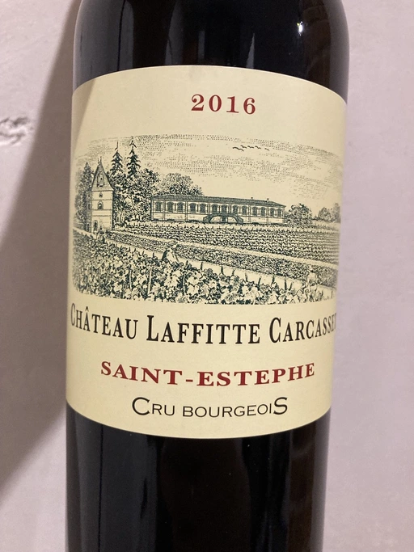

- Type
- Red Still, Dry
- Producer
- Chateau Laffitte Carcasset
- Vintage
- 2016
- Location
- France, Saint-Estephe AOC
- Grapes
- Cabernet Sauvignon, Merlot, Cabernet Franc
- Alcohol
- 13
- Sugar
- 0.2
- Price
- 892 UAH
- Cellar
- N/A
Ratings
2022-06-02 - 7.50
Bordeaux is a rare guest in my glass. And so it’s interesting. Black berries, jam, shitload of vanilla and some chocolate crumbles. Well balanced, tannin and ethanol are well integrated. Aftertaste is long and persistent, and flavourful. Seems like it has potential, but will I discover it? Only by accident.